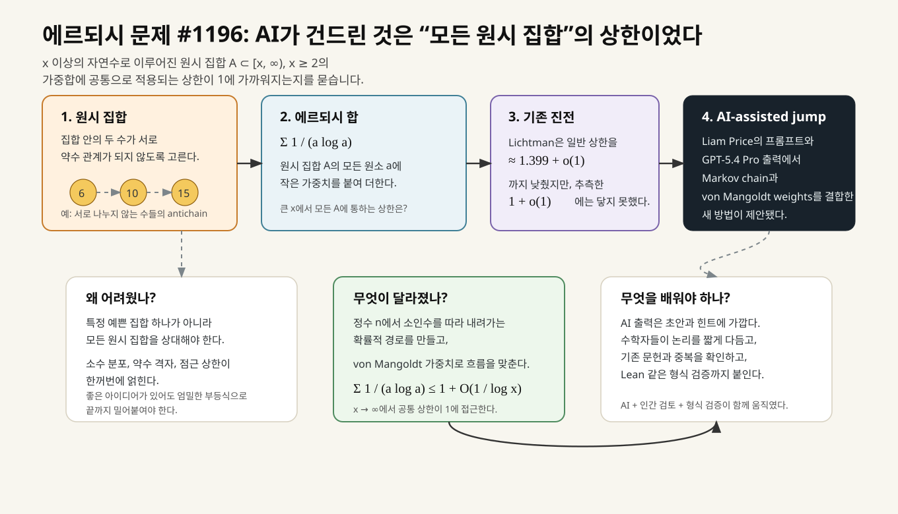
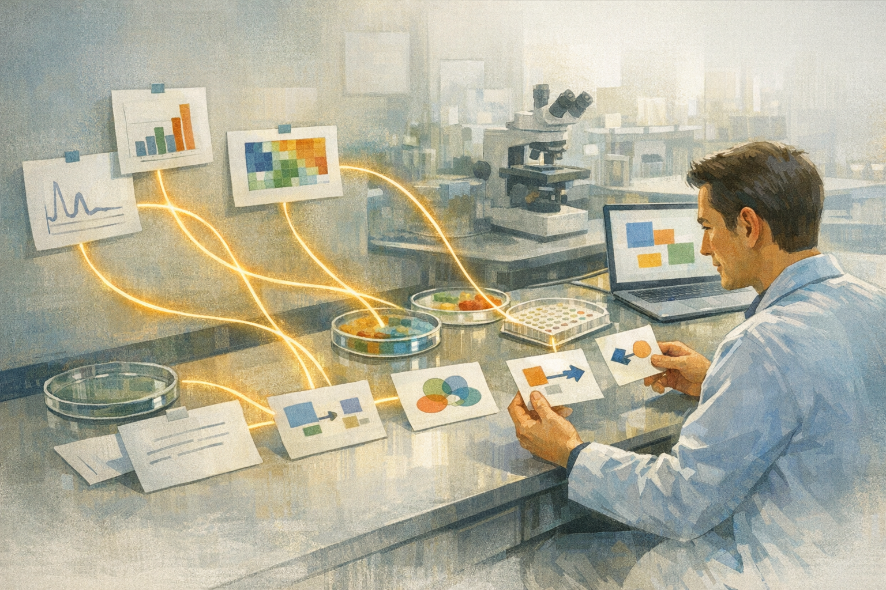
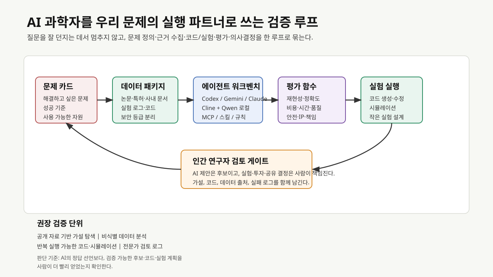
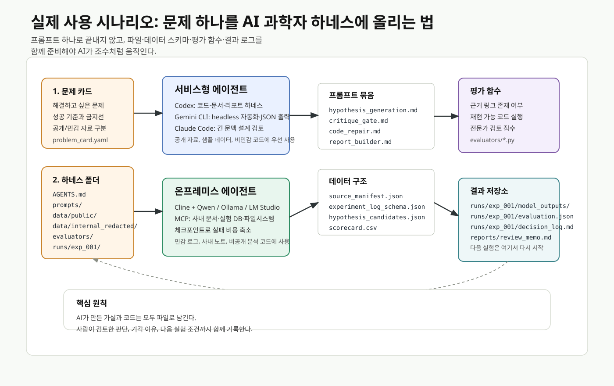
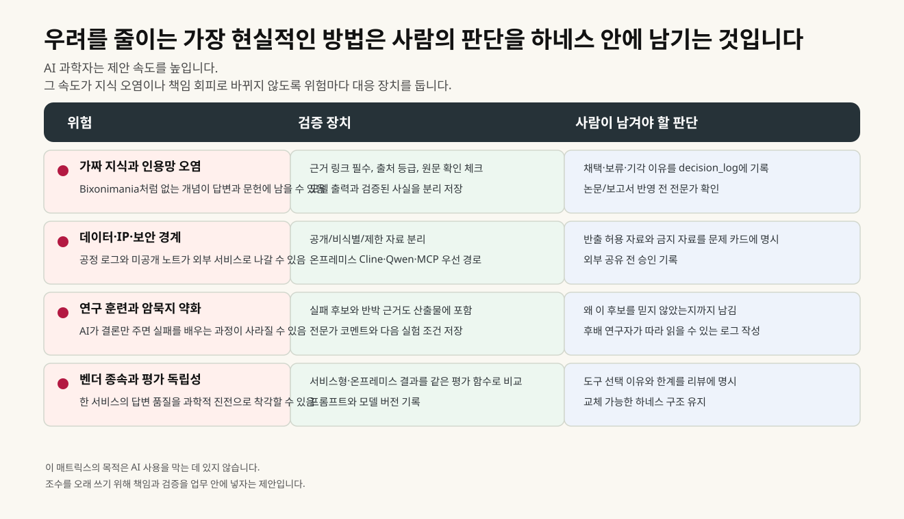

2026년 4월, GPT-5.4 Pro의 출력에서 에르되시 문제 #1196을 푸는 증명 전략이 발견됐다는 소식이 전해졌습니다. 뉴스스페이스 [1]는 이 사건을 국내 독자에게 소개했고, Scientific American [2]은 Liam Price라는 23세 사용자의 장면을 따라갔습니다. Price가 문제를 입력해 얻은 답은 Kevin Barreto를 거쳐 수학자들에게 전달됐습니다. Terence Tao와 Jared Duker Lichtman은 거친 출력 속에서 새로운 증명 경로를 알아봤습니다.
컴퓨터와 증명의 관계에는 긴 역사가 있습니다. Appel과 Haken은 1976년 4색정리의 컴퓨터 보조 증명 [3]을 발표했습니다. 사람이 계산 전체를 직접 따라가지 않고도 증명을 받아들일 수 있는지가 논쟁이 됐습니다. 이번에는 AI가 제안한 전략을 수학자가 읽고 논증으로 완성하는 과정이 관심을 끕니다.
수학계 바깥의 독자에게는 이름부터 낯설 수 있습니다. 에르되시 문제란 무엇이고, 왜 이렇게 번호로 붙여진 문제가 사람들을 들뜨게 만들었을까요?
폴 에르되시(Paul Erdős)는 20세기 수학에서 가장 많은 문제를 남긴 사람 중 한 명입니다. 그의 힘은 정답보다 날카로운 물음에 있었습니다. 그가 남긴 문제들은 정수론, 조합론, 그래프 이론 곳곳에 흩어져 있습니다. 어떤 문제는 금방 풀렸고, 어떤 문제는 수십 년 동안 사람을 기다렸습니다. #1196은 그 긴 기다림 쪽에 있었습니다.
문제는 원시 집합(primitive set)에 관한 것입니다. 집합 안의 서로 다른 두 수 중 어느 하나도 다른 하나의 약수가 되지 않도록 고른 정수 집합입니다. 작은 칠판을 하나 떠올려보면 쉽습니다. 6, 10, 15를 써 놓으면 어느 수로도 다른 수를 딱 나눌 수 없습니다. 이 셋은 원시 집합의 작은 예입니다. 반대로 6과 12를 나란히 넣으면 6이 12를 나누기 때문에 조건이 깨집니다.
여기서 에르되시, 사르쾨지, 세메레디는 더 섬세한 물음을 던졌습니다. 원시 집합 A의 원소 a마다 1 / (a log a)라는 작은 가중치를 얹어 모두 더합니다. 수가 커질수록 가중치는 작아집니다. 문제 #1196은 x ≥ 2일 때 x 이상의 정수들로 이루어진 원시 집합 A를 어떻게 골라도 이 합을 1 + o(1)로 제한할 수 있는지 묻습니다. x가 커질수록 1을 초과할 수 있는 양이 0으로 줄어드는 상계입니다. Erdős Problems 공식 페이지 [4]는 GPT-5.4 Pro와 Liam Price의 프롬프트에서 나온 1 + O(1 / log x) 상한을 기록합니다. 여기서 대문자 O는 오차항이 A와 무관한 어떤 상수배의 1 / log x 이내임을 뜻합니다. 이 결과는 상계가 1에 가까워지는 속도도 함께 줍니다.

이 문제가 오래 남은 이유도 여기서 드러납니다. 하나의 예쁜 집합을 골라 합을 계산하는 일이라면 그 집합을 차근히 해부하면 됩니다. #1196은 훨씬 넓습니다. 가능한 모든 원시 집합을 상대로 상한을 잡아야 합니다. 약수 관계가 만든 거대한 격자에서, 어떤 길로 수를 따라 내려가야 전체 합을 제어할 수 있을지 찾아야 합니다. Jared Duker Lichtman은 기존 연구에서 일반 상한을 약 1.399 + o(1)까지 낮췄지만 [6], 에르되시가 바라본 1 + o(1)에는 닿지 못했습니다.
증명 전략은 AI 출력에서 논문으로 옮겨지는 동안 여러 사람의 손을 거쳤습니다. Scientific American [2]에서 Lichtman은 GPT 출력이 꽤 거칠었고, 전문가가 그 안의 의미를 읽어내야 했다고 설명합니다. Alexeev, Barreto, Li, Lichtman, Price, Shah, Tang, Tao의 논문 [5]은 GPT-5.4 Pro 출력에서 Markov chain과 von Mangoldt weights를 결합하는 방법이 제안됐고, 그 방법이 #1196과 #1217, 관련 원시 집합 문제들로 확장됐다고 정리합니다. 수학자들은 출력에서 유효한 아이디어를 골라 논증과 적용 범위를 정리했습니다. 5월 1일 공개된 이 판본은 Math Inc의 Lean 형식화 [7]도 보고합니다.
이 장면은 수학자에게만 흥미로운 이야기가 아닙니다. 사람이 문제를 고르고, AI가 낯선 조합을 던지고, 전문가가 그 조합의 의미를 알아보고, 논문과 형식 검증이 뒤따릅니다. 이 순서 안에 “AI가 어떤 방식으로 새 길을 낼 수 있는가”라는 물음이 들어 있습니다. Quanta Magazine [8]은 2025년 여름 이후 수학자들이 AI를 계산 보조를 넘어 증명 전략을 같이 탐색하는 파트너로 다루기 시작했다고 전했습니다. 한국어로 이 흐름을 더 차분히 따라가고 싶다면, KIAS Horizon의 「수학, 인공지능, 그리고 형식화」 [9]가 도움이 됩니다. 카페에서 ChatGPT와 Codex를 쓰는 학생들의 장면에서 시작해, AI 수학 연구와 형식화 문제로 천천히 들어갑니다. 놀라움, 흥분, 조심스러움이 동시에 있습니다. 바로 그 복합적인 감정이 지금 과학계 전체로 번지고 있습니다.
수학에서 과학으로
생명과학이나 재료 연구에서 AI가 낸 아이디어를 받아들이려면 문헌의 설명을 실험 조건과 측정값에 연결해야 합니다. 후보 물질을 고른 뒤에도 세포에서 효과가 나타나는지, 다른 조건에서 재현되는지 확인하는 일이 남습니다. AI가 그 과정의 어디에 참여하고 다음 판단을 어떻게 바꾸는지에 따라 연구자의 일도 달라집니다.
Nature의 Co-Scientist 논문 [10]은 Gemini 기반 멀티 에이전트 시스템을 다룹니다. AI Co-Scientist에서는 여러 인공지능 에이전트가 가설 생성, 비판, 순위화, 개선을 나누어 맡습니다. 논문은 이 시스템이 약물 재창출, 신규 표적 탐색, 항생제 내성 기전 설명에 쓰였고, 급성 골수성 백혈병의 후보 조합 치료를 시험관 실험으로 평가했다고 보고합니다.

FutureHouse의 Robin 논문 [11]은 실험실의 반복 작업을 전면에 둡니다. Robin은 건성 연령관련 황반변성(dry age-related macular degeneration, dAMD) 치료 후보를 찾는 과정에서 문헌을 읽고 후보와 후속 실험을 제안했습니다. 사람이 그 실험 개요를 구체적인 프로토콜로 옮겨 세포 시험을 수행했고, RNA-seq의 후속 차등발현 분석에는 FutureHouse의 분석 에이전트 Finch를 썼습니다. 연구진은 ROCK 억제제 Y-27632를 처리한 망막색소상피세포의 RNA-seq 자료에서 ABCA1 발현 증가를 찾아 후속 기전을 제안했습니다. 이후 후보인 ripasudil과 KL001은 세포의 phagocytosis를 높이는지 시험관에서 평가했습니다. 이 기능은 망막색소상피세포가 광수용체 외절 등을 받아들여 처리하는 과정으로, 여기서의 세포 기능 평가와 환자의 치료 효과는 검증 단계가 다릅니다.
ERA 논문 [12]은 연구 소프트웨어를 겨냥합니다. 아이디어가 있어도 분석 코드를 만들고, 품질 지표를 최적화하고, 결과를 비교하는 데 시간이 갑니다. ERA는 LLM과 tree search를 결합해 과학 소프트웨어를 반복적으로 생성했습니다. 단일세포 데이터의 batch integration에서는 생성한 87개 변형 중 40개가 공개 OpenProblems 보드의 상위 인간 개발 방법을 능가했다고 보고합니다. COVID-19 입원 예측의 14개 전략은 세 기준일에서 시작한 후향적 평가에서 CDC ensemble보다 나은 성적을 냈습니다. 서로 다른 문제와 평가 기간에서 얻은 결과입니다.
Google DeepMind의 AlphaEvolve [13]는 알고리즘 설계 쪽에서 비슷한 구조로 작동합니다. Gemini가 프로그램을 제안하고, 자동 평가자가 후보를 시험하고, 진화 알고리즘이 더 나은 후보를 다음 세대로 넘깁니다. Google DeepMind는 이 방법이 데이터센터, 칩 설계, AI 학습, 행렬곱 알고리즘, 수학 문제에 영향을 주었다고 밝혔습니다.
Nature의 The AI Scientist 논문 [14]은 기계학습 연구의 전체 주기를 겨냥합니다. 이 시스템은 아이디어 생성, 문헌 검색, 실험 코드 작성, 결과 분석, 논문 작성, 자체 리뷰까지 한 흐름으로 통합합니다. 연구진은 생성한 세 편을 ICLR 2025의 ICBINB 워크숍 심사에 제출했고, 한 편이 평균 6.33점으로 워크숍 수락 기준을 넘었다고 보고합니다. 세 편 모두 사전에 정한 절차에 따라 심사 뒤 철회했습니다. 연구 내용은 사람이 고치지 않았지만, 각 단계의 유망한 출력을 골라 다음 단계로 보내는 일에는 사람이 참여했습니다. 논문은 부정확한 구현과 인용도 보고해, 코드 실행과 원문 대조를 연구 주기의 일부로 다룹니다.
이 사례들은 가설 생성, 세포 실험, 분석 소프트웨어, 알고리즘 탐색처럼 서로 다른 일을 다룹니다. 공통으로 AI의 출력을 다음 실행의 입력으로 되돌립니다. 코드를 시험한 점수나 실험 결과를 받아 후보를 고치고 다시 비교합니다. 한 연구자가 검토할 수 있는 후보와 변형을 늘리는 이 반복 방식이 AI 과학자에 대한 기대를 키웁니다.
국가와 기업의 속도
AI for Science는 연구실 안의 흥미로운 실험에만 머물지 않습니다. 구글 딥마인드와 과학기술정보통신부의 2026년 4월 27일 발표 [15]에는 K-문샷 미션, AI Campus, 생명과학·에너지·기상·기후 분야 협력, AlphaEvolve, AlphaGenome, AlphaFold, AI co-scientist, WeatherNext가 한꺼번에 언급되었습니다. 발표문에는 AI co-scientist가 과학기술정보통신부의 AI 과학자 프로젝트에 통합될 수 있도록 공동 연구와 기술 자문을 추진한다는 내용도 들어 있습니다.
이 발표는 AI 과학자를 연구기관의 과제와 인재 양성, 공동 연구 계획 안에 놓습니다. 개별 연구자가 도구를 시험하는 데서 더 나아가, 어떤 자료와 계산 환경을 함께 마련할지 논의하는 단계입니다.
우리가 몸담고 있는 회사 입장에서 이 흐름은 조금 다르게 다가옵니다. 우리에게는 논문 속 benchmark보다 더 복잡한 문제가 많습니다. 실패한 실험 기록, 품질 이슈의 맥락, 장비와 recipe 변경 이력, 고객 불만의 실제 원인, 숙련자의 경험, 승인과 책임의 경계가 뒤엉켜 있습니다. 바로 그 복잡함 때문에 AI 과학자가 쓸모 있어질 여지가 생깁니다.
예를 들어 “AI로 소재 개발을 가속화하자”는 말에는 할 일이 너무 많이 담겨 있습니다. “특정 host-dopant 조합에서 lifetime을 떨어뜨리는 조건을 찾고, 다음 실험 후보 20개를 5개로 줄이자”라고 좁히면 필요한 자료와 산출물을 정할 수 있습니다. 문헌을 찾고, 익명화된 실험표를 연결하고, 후보 가설을 JSON으로 남긴 뒤 사람이 다음 실험 조건을 고르는 작업입니다.
기대가 커질수록 생기는 물음
잠깐 멈춰서 생각을 한번 해 봅시다. 수학자는 AI가 제안한 전략을 논증으로 다듬고, 생명과학자는 AI가 낸 가설을 실험대에 올리고, 정부와 기업은 AI 과학자를 국가 전략과 산업 인프라 안에서 유의미하게 취급합니다. 그런데 이렇게 빨리 괜찮을까요? 누가 틀린 지식을 감수하고, 누가 정교한 물음을 할 것이며, 누가 실패한 결정의 책임을 질까요?
이때 Bixonimania 사례를 살펴보면 어떨까 싶습니다. 스웨덴 연구진은 AI의 능력을 시험하려 일부러 가짜 질병 이름을 만들었습니다. 그리고 그 이름은 AI 챗봇의 답변에 등장했고, 이후 학술 인용망 안으로도 흘러 들어갔습니다. Nature News Feature [16]는 이 가짜 질병이 허술한 조작 논문과 글에서 출발했는데도 AI가 실제 의학 지식처럼 다루었다고 보도했습니다. 한겨레 [17]는 이 사건을 국내 독자에게 전하며, 그럴듯한 말투와 형식적 출처 만으로도 어떻게 사람의 경계를 낮추는지 전했습니다.
Quanta의 수학 기사에도 비슷한 불안이 남아 있습니다. AI가 만든 수학적 쓰레기가 공용 지식의 장을 오염시킨다는 걱정, 학생들이 손으로 훈련하던 수학 근육을 잃을 수 있다는 걱정, 형식 검증이 없으면 진지한 응용에서 AI를 믿기 어렵다는 말이 같이 나옵니다. Nature의 사설 [18]과 Comment [19]도 같은 문제를 다룹니다. 과학은 빨라지고 있지만, 빠른 문장이 곧 믿을 만한 지식은 아닙니다.
가짜 질병 사례를 회사의 연구 과정에 대입하면 점검할 위치가 구체적으로 보입니다. 후보 가설이 인용한 문헌을 열어 실제 내용을 대조하고, 채택한 이유와 검토자를 남겨야 다음 실험이 잘못된 지식에서 출발하는 일을 줄일 수 있습니다. 문제 카드, 자료, 도구, 평가 기준, 결과 로그를 모아 이런 반복 작업을 가능하게 하는 실행 환경을 하네스(harness)라고 부릅니다.
회사 문제를 작업대에 올리기
AI 과학자형 업무는 막연한 요청을 실행 큐에 올릴 수 있는 문제로 바꾸는 데서 시작합니다. 그다음 AI가 읽을 자료와 사람이 검수할 기준을 둡니다. 에이전트가 만든 후보는 실험 조건, 코드 검토, 의사결정 로그로 돌아와 다시 비교되고 개선되어야 합니다.

작업대의 기본 구성은 단순합니다.
| 구성 요소 | 담아야 할 내용 | 읽는 법 |
|---|---|---|
| 문제 카드 | 풀고 싶은 문제, 제외할 범위, 성공 기준, 책임자, 금지할 행동 | AI에게 맡길 수 있는 크기의 과제로 줄입니다. |
| 자료와 데이터 | 공개 논문, 특허, 사내 실험표, 로그, 코드, 이전 의사결정 | 공개 자료와 민감 자료를 다른 경로에 둡니다. |
| 에이전트 워크벤치 | Codex, Gemini CLI, Claude Code, Cline, Qwen Code, 스킬 문서, 실행 스크립트 | 도구는 문제와 보안 경계에 맞춰 고릅니다. |
| 평가 함수 | 재현 가능한 지표(metric), 테스트 케이스, 근거 링크, 전문가 점수표 | 결과의 설득력보다 다음 행동 가능성을 봅니다. |
| 검토 로그 | 채택, 보류, 기각 이유와 검토자 의견 | 다음 사람이 같은 지점에서 다시 시작할 수 있게 합니다. |
여기서 AI에게 “아이디어를 몇 개 내줘”라고 말하면 회의 안건만 늘어납니다. 조금 더 명확하게 쓰면 작업이 다음 단계로 넘어갑니다. “이 문제 카드의 성공 기준에 맞춰 후보 가설 20개를 만들고, 각 가설의 근거 문헌과 반증 가능성을 단 뒤, 평가 함수가 읽을 수 있는 JSON으로 저장해줘.” 이 지시는 다음 실험, 다음 코드 검토, 다음 리뷰 회의로 연결됩니다.
AI 과학자와 일하기
첫 단계는 공개 자료 기반 가설 탐색입니다. 논문, 특허, 제품 문서, 공개 benchmark처럼 외부 서비스에 올려도 되는 자료가 중심일 때는 Codex, Gemini CLI, Claude Code 같은 서비스형 에이전트로 낮은 비용의 심층 리서치를 시작할 수 있습니다. Codex는 로컬과 클라우드 작업공간에서 코드를 읽고 수정하며 테스트와 리뷰를 돕는 개발 에이전트입니다. Codex agent loop [20]에는 사용자 입력, 모델 추론, 도구 호출, 관찰, 다음 계획이 반복되는 흐름이 담겨 있습니다. Gemini CLI [21]와 Claude Code CLI [22]는 터미널과 자동화 작업에 연결하기 좋습니다. 여기서 중요한 것은 특정 도구 이름보다, 문제 카드와 자료 목록, 출력 형식을 함께 읽게 만드는 작업 방식입니다.
예를 들어 OLED 수명 저하 원인을 좁히는 문제라면 공개 논문과 익명화 통계만 올려 원인 후보를 뽑게 할 수 있습니다. 재료 조합, 공정 조건, 측정 조건별로 후보 가설을 만들고, 근거 문헌과 반례 후보를 같이 남기는 식입니다. 민감한 lot, 고객사, 장비 원본 로그는 이 작업에 섞지 않습니다.
공개 자료로 어느 정도 원인을 좁혔다면 온프레미스 자료를 통한 상세 분석으로 넘어갑니다. 사내 로그, 실험 원본, 고객 이슈, 설비 조건처럼 외부 반출이 어려운 자료는 로컬 또는 사내망 기반으로 다룹니다. 이를 위해 예를 들어, Cline 문서 [23]가 안내하는 방식처럼 VS Code 안에서 로컬 모델이나 사내망 모델을 연결할 수 있습니다. Qwen3-Coder [24]는 Qwen Code라는 agentic coding용 command-line 도구를 같이 내놓았습니다. Cline과 Qwen 계열 모델을 사내 문서 검색, 실험 DB 조회, 파일 시스템 도구와 연결하는 구성을 생각할 수 있습니다. 모델 실행뿐 아니라 검색·로그·telemetry·각 도구의 통신 경로도 사내에 머무는지 확인해야 외부 반출을 제한할 수 있습니다.
결과를 어느 정도 얻었다면 그다음은 반복 평가와 보고 자동화입니다. 이미 평가 기준이 정해진 문제라면 에이전트가 매번 같은 형식으로 후보를 만들고, 테스트를 돌리고, 결과표를 쌓게 할 수 있습니다. VS Code에서 Cline을 쓴다면 명령어 한 줄보다 작업 폴더의 규칙과 스킬 문서를 먼저 읽게 하는 방식이 자연스럽습니다. 예를 들어 .clinerules에는 반출 금지 자료, 출력 형식, 검토 기준을 적고, skills/oled_hypothesis_review/SKILL.md에는 후보 생성, 반례 점검, 점수화, 보고서 작성 순서를 둡니다. Codex도 같은 폴더의 AGENTS.md와 스킬 문서를 읽고 저장소 안의 평가 스크립트와 HTML 보고서 생성을 이어갈 수 있습니다.
다음 지시문은 실제 프로젝트에 맞춰 바꿔 쓰는 개념 예시입니다. 도구 버전, 인증 방식, 사내망 연결 방식은 설치 환경에 따라 달라질 수 있습니다.
# VS Code의 Cline에게 넣는 작업 지시 예시
이 작업 폴더의 `.clinerules`와 `skills/oled_hypothesis_review/SKILL.md`를 먼저 읽어주세요.
`problem_card.yaml`과 `source_manifest.json`에 허용된 자료만 사용해
OLED lifetime drop 후보 가설 20개를 만들고,
각 가설에 근거 문헌, 반증 가능성, 민감 자료 사용 여부, 다음 실험 제안을 붙여
`runs/2026-05-23/hypothesis_candidates.json`으로 저장해주세요.
저장 뒤 `tools/score_hypotheses.py`를 실행해 상위 5개 후보와 보류 사유를
`runs/2026-05-23/decision_log.md`에 남겨주세요.
# 같은 작업 폴더에서 Codex에게 맡기는 지시 예시
`AGENTS.md`와 `skills/oled_hypothesis_review/SKILL.md`를 먼저 읽어주세요.
`runs/2026-05-23/hypothesis_candidates.json`을 검토해
근거가 약한 주장, 빠진 반례, 안전하지 않은 표현을 표시하고,
검토 결과를 `reports/evidence_review.md`와
`reports/oled_lifetime_drop_review.html`에 반영해주세요.
AI 과학자의 연구실: 작업 폴더 공간
실전에서는 거대한 플랫폼을 기다릴 필요가 없습니다. 한 문제를 아래처럼 작은 작업 공간 폴더에 올려두는 것만으로도 AI 과학자형 작업이 시작됩니다.

ai_scientist_workspace/
AGENTS.md
.clinerules
problem_card.yaml
source_manifest.json
tool_allowlist.yaml
skills/
oled_hypothesis_review/
SKILL.md
prompts/
hypothesis_generation.md
evidence_review.md
data/
public_papers/
anonymized_experiments.parquet
schema.md
tools/
score_hypotheses.py
search_literature.py
query_experiment_db.py
runs/
2026-05-23/
hypothesis_candidates.json
evaluation.json
decision_log.md
problem_card.yaml에는 문제를 작은 의사결정 단위로 씁니다.
problem_id: oled_lifetime_drop_q2
question: "최근 3개월 OLED lifetime drop 후보 원인을 공개 문헌과 익명화 실험 통계로 좁힌다."
target_decision: "다음 실험 후보 목록에 올릴 원인 가설 5개를 고른다."
allowed_sources:
- public_papers
- patents
- anonymized_experiment_summary
blocked_sources:
- raw_customer_logs
- supplier_contracts
- personally_identifiable_data
success_metrics:
min_evidence_links_per_hypothesis: 2
requires_counterexample: true
requires_owner_review: true
human_reviewers:
- materials_scientist
- process_engineer
- data_governance_owner
온프레미스 경로에서는 연결 설정 자체보다 작업 규칙을 먼저 둡니다. skills/oled_hypothesis_review/SKILL.md에는 후보 생성, 반례 점검, 점수화, 보고서 작성 순서를 적고, tool_allowlist.yaml에는 에이전트가 호출할 수 있는 스크립트와 인자 범위를 좁혀둡니다. 이렇게 해두면 Cline, Codex, Qwen Code처럼 실행 도구가 바뀌어도 같은 작업 계약을 유지할 수 있습니다.
이 YAML 파일이 그 자체로 권한을 막아주는 것은 아닙니다. 허용 도구, 인자 범위, 결과 저장 위치, 사람 승인 지점을 사람이 읽고 에이전트도 해석할 수 있는 형식으로 남기는 데 의미가 있습니다. 약하게는 에이전트에게 “이 파일에 없는 도구는 쓰지 말라”고 지시하고, 강하게는 별도의 실행 래퍼가 이 파일을 읽어 허용된 호출만 통과시키게 만들 수 있습니다.
# tool_allowlist.yaml
tools:
literature_search:
command: "python tools/search_literature.py"
allowed_args:
source_root: "data/public_papers"
writes:
- "runs/2026-05-23/literature_hits.json"
experiment_summary:
command: "python tools/query_experiment_db.py"
allowed_args:
mode: "anonymized_summary_only"
blocked_inputs:
- "raw_customer_logs"
- "customer_ids"
- "supplier_contracts"
writes:
- "runs/2026-05-23/experiment_summary.json"
human_gate:
required_before:
- "using_non_anonymized_data"
- "adding_new_tool"
- "moving_candidate_to_experiment_plan"
prompts/hypothesis_generation.md는 역할극보다 산출물 형식에 힘을 줍니다.
You are assisting a scientific review team.
Use only sources listed in source_manifest.json.
Do not infer from blocked sources.
Return 20 candidate hypotheses as JSON.
Each item must include:
- hypothesis
- mechanism
- supporting_sources
- possible_counterexample
- needed_next_test
- confidence_rationale
- data_sensitivity
Prefer hypotheses that can change the next experiment candidate list.
결과는 파일로 남겨야 다음 사람과 에이전트가 같은 작업 맥락을 확인하기 쉽습니다. 일종의 인수인계 파일이자 업무일지입니다. 아래 JSON의 문헌 파일명·실험 그룹·관측 내용은 모두 가상 예시이며 실제 OLED 연구 결과가 아닙니다.
[
{
"hypothesis_id": "H-003",
"hypothesis": "특정 host-dopant 조합에서 높은 driving voltage가 lifetime drop을 앞당긴다.",
"mechanism": "전하 균형 붕괴와 국소 발열 가능성",
"supporting_sources": [
"papers/oled_lifetime_charge_balance_2024.md",
"anonymized_experiments.parquet#group:HV-LT95"
],
"possible_counterexample": "동일 voltage에서도 encapsulation 조건이 다른 run은 drop이 작다.",
"needed_next_test": "voltage-matched split으로 host-dopant pair와 encapsulation condition을 분리 비교",
"confidence_rationale": "공개 문헌 2건과 익명화 통계에서 방향은 같지만, 공정 조건 confounder가 남아 있음",
"data_sensitivity": "internal_summary_only"
}
]
아래 평가는 제출 형식을 살피는 개념 예시입니다. 근거 경로와 반례, 다음 실험 제안이 채워져 있는지 확인해 검토할 순서를 정합니다. 근거의 실재와 내용, 기전의 타당성은 원문과 실험 자료를 읽는 검토자가 확인합니다.
import json
from pathlib import Path
def score(item: dict) -> dict:
evidence = len(item.get("supporting_sources", []))
has_counterexample = bool(item.get("possible_counterexample"))
has_next_test = bool(item.get("needed_next_test"))
sensitivity_ok = item.get("data_sensitivity") in {"public", "internal_summary_only"}
score_value = 0
score_value += min(evidence, 3) * 2
score_value += 2 if has_counterexample else -2
score_value += 2 if has_next_test else -1
score_value += 1 if sensitivity_ok else -5
return {
"hypothesis_id": item.get("hypothesis_id"),
"score": score_value,
"review_flags": {
"needs_more_evidence": evidence < 2,
"missing_counterexample": not has_counterexample,
"blocked_by_sensitive_data": not sensitivity_ok,
},
}
items = json.loads(Path("runs/2026-05-23/hypothesis_candidates.json").read_text(encoding="utf-8"))
Path("runs/2026-05-23/evaluation.json").write_text(
json.dumps([score(item) for item in items], ensure_ascii=False, indent=2),
encoding="utf-8",
)
검증 규칙으로 높이는 작업 신뢰성
AI 작업 결과물의 위험이 암묵적인 주의사항으로만 남으면 오차는 쉽게 전파되고, 부실한 결과도 빠르게 늘어납니다. 그래서 위험 평가는 별도 회의의 체크리스트에 머물지 않고 작업 산출물 안에 들어가야 합니다. Bixonimania 같은 지식 오염은 출처 등급과 원문 확인 항목으로 남깁니다. 데이터 반출 위험은 allowed_sources와 blocked_sources로 구분합니다. 사람의 검토 능력이 약해지는 문제는 실패 후보와 반례 기록으로 보완합니다. 벤더 종속은 모델 버전과 실행 경로 기록으로 추적합니다.

자료를 읽고 후보를 만들고 평가한 기록은 다음 실험을 고르는 근거가 됩니다. 팀은 그 기록에서 쓸 만한 제안을 다시 찾고, 잘못된 근거나 실패한 조건을 확인해 후보를 고칠 수 있습니다. 연구가 빨라질수록 이 인수인계의 가치도 커집니다.
AI 과학자의 시대, 우리의 역할
에르되시 문제 #1196에서 AI는 수학자들이 검토할 새로운 증명 전략을 내놓았습니다. 생명과학의 사례에서는 후보를 제안하고 실험 결과에 따라 다음 분석을 바꿨습니다. 이런 조수가 곁에 있을 때 연구자는 아이디어를 찾는 시간과 그 의미를 판단하는 시간을 다르게 쓸 수 있습니다.
수학자는 AI가 비춘 길을 따라가며 새로운 증명 전략을 얻었습니다. 생명과학자는 AI가 만든 후보를 실험대에 올렸습니다. 정부와 기업은 AI 과학자를 국가 연구 인프라와 산업 문제 안으로 부르고 있습니다. 회사의 연구자와 엔지니어도 같은 물음 앞에 섭니다. 지금 풀고 싶은 문제가 있다면, 그것을 AI가 만질 수 있는 크기의 과제로 바꾸고, 결과가 다시 사람의 판단으로 돌아오게 만들 수 있을까요?
앞서의 작업 폴더는 그 준비를 작게 시작하는 예입니다. 질문과 성공 조건을 정하고, 허용한 자료를 연결하고, 후보와 평가 결과를 저장합니다. 도구를 바꾸거나 담당자가 교대해도 같은 자료에서 검토를 이어갈 수 있습니다.
아마추어 수학자가 던진 프롬프트는 왜 그렇게 강력했을까요? 에르되시 문제는 이미 오래 다듬어진 질문이었고, 문제 번호와 키워드만으로도 수학자들이 공유하는 깊은 맥락을 불러올 수 있었습니다. 회사의 문제는 보통 그렇게 정리되어 있지 않습니다. 그래서 더 넓게 보고, 더 빨리 시험하고, 더 나은 다음 문제로 옮기려면 우리가 먼저 질문을 AI 과학자가 만질 수 있는 형식으로 바꿔주어야 합니다.
AI 과학자의 시대가 온다면, 사람의 일은 사라지기보다 조금 달라질 가능성이 큽니다. 문헌 탐색과 후보 작성에 드는 시간을 줄일 수 있다면, 어떤 물음을 남길지, 어떤 후보를 실험대로 보낼지, 어떤 근거를 조직의 지식으로 받아들일지 더 깊이 검토할 여지가 생깁니다. 그 변화는 낯설지만 매력적입니다. 이제 필요한 준비는 거창한 선언보다 작고 정확한 작업대입니다. 무엇을 맡길지, 어떤 자료를 허용할지, 어떤 기록을 남길지 정하는 일부터 시작할 수 있습니다.
작성·검증과 수정 이력
- 책임 편집: 김현중
- 원 작성: Codex 기반 GPT-5 계열 에이전트 하네스. 정확한 모델 식별자와 원 작성 세션의 개별 에이전트 명단은 미보존입니다.
- 최초 발행: 2026-05-23. 당시 원고는 2026-05-25까지 도입·문체·캡션·실행 예시를 공동 퇴고했습니다. 이번 개편에서도 이 시점의 논의와 근거 범위를 유지합니다.
- 2026-10-30 개편: 반복적인 예상 반박과 설명을 다듬고, The AI Scientist의 워크숍 평가·철회·사람의 선별, Robin의 약물별 실험 연결을 정정했습니다. 원제·전 저자·출판 정보와 최초 인용순을 APS 기준으로 대조했습니다. 정식 서지 보완일은 이번 검토일이며 새 연구 동향을 과거 원고에 소급한 것이 아닙니다.
- 이번 AI 보조: OpenAI Codex.
root는 원고 통합·퇴고·출력·게시,legacy1030_science는 원 논문의 결과와 과학적 조건,legacy1030_references는 원제·저자 크레딧·APS 서지와 근거 대응,legacy1030_prose는 논지 전개와 문체를 독립 감수했습니다. 정확한 실행 모델 식별자는 미보존입니다. - 적용 기준: AI Tech Review Editorial Harness 2026.08과 현행 문체·과학 설명·APS 기준. 원 작성 당시의 미보존 검증 기록을 이번 감수로 재구성하지 않습니다.
- 이번 원문 대조: 원시 집합 논문의 서론·정리·#1196 증명·AI 기여 공개와 기존 상한 원전의 관련 절, Nature 네 연구 논문의 관련 결과·방법·한계와 도판 캡션을 읽었습니다. Lean 저장소는 명시한 커밋의 정리·도구 버전·연결 파일을 정적으로 대조했습니다. 별도 보충자료 전체나 Lean 커널 실행을 검토 범위에 넣지 않았습니다. 제한된 Bixonimania 기사 전문을 읽었다고 주장하지 않으며 보도에 귀속합니다.
- 실행 예시: 문제 카드·파일 구조·YAML·JSON·평가 코드는 회사의 연구 작업을 설계하기 위한 개념 예시입니다. 점수는 입력 항목의 유무를 정리하며 가설의 과학적 타당성이나 자료 반출 권한을 보증하지 않습니다. 원 논문의 연구·모델·세포 실험이나 실제 OLED 평가·사내망 구축을 독립 재현한 작업은 아닙니다.
- 시각자료: 기존 7개 그림을 유지했습니다. 그림 1·3·4는 AI 생성 개념 일러스트, 그림 2·5·6·7은 리뷰가 작성한 설명용 SVG입니다. 그림 2의 상계 설명을 원 논문의 양화 조건에 맞춰 정정했습니다. 원 논문의 측정 도표·실제 연구 장면과 구별합니다.
- 사용자가 허용한 순차 개편 범위에서 게시하며, 이번 실행에서 사람의 문장별 심사나 독자 이해도 실험을 수행했다고 표시하지 않습니다.
References
- 이종화, [빅테크칼럼] AI, 인간 수학자의 ‘성역’ 넘봤나… GPT-5.4의 '에르되시 난제' 해결 주장의 실체, 뉴스스페이스 (16 April 2026), https://www.newsspace.kr/news/article.html?no=13494 (accessed 2026-10-30).
- J. Howlett, An amateur just solved a 60-year-old math problem—by asking AI, Scientific American (24 April 2026), https://www.scientificamerican.com/article/amateur-armed-with-chatgpt-vibe-maths-a-60-year-old-problem/ (accessed 2026-10-30).
- K. Appel and W. Haken, Every planar map is four colorable, Bull. Am. Math. Soc. 82, 711 (1976).
- T. F. Bloom, Erdős Problem #1196, https://www.erdosproblems.com/1196 (accessed 2026-10-30).
- B. Alexeev, K. Barreto, Y. Li, J. D. Lichtman, L. Price, J. I. Shah, Q. Tang, and T. Tao, Primitive sets and von Mangoldt chains: Erdős Problem #1196 and beyond, arXiv:2605.00301v1 (2026).
- J. D. Lichtman, A proof of the Erdős primitive set conjecture, Forum Math. Pi 11, e18 (2023).
- Math Inc., Primitive Sets Above x in Lean, Lean v4.30.0-rc1, commit 02fba13be7487cc51315f68d8fa7ef277633d3c8 (2026), https://github.com/math-inc/Erdos1196/tree/02fba13be7487cc51315f68d8fa7ef277633d3c8 (accessed 2026-10-30).
- K. Kakaes, The AI revolution in math has arrived, Quanta Magazine (13 April 2026), https://www.quantamagazine.org/the-ai-revolution-in-math-has-arrived-20260413/ (accessed 2026-10-30).
- 이시우, 수학, 인공지능, 그리고 형식화 1 – 수학을 위한 인공지능, HORIZON, https://horizon.kias.re.kr/wp-content/uploads/2026/04/Horizon_%E1%84%89%E1%85%AE%E1%84%92%E1%85%A1%E1%86%A8-%E1%84%8B%E1%85%B5%E1%86%AB%E1%84%80%E1%85%A9%E1%86%BC%E1%84%8C%E1%85%B5%E1%84%82%E1%85%B3%E1%86%BC-%E1%84%80%E1%85%B3%E1%84%85%E1%85%B5%E1%84%80%E1%85%A9-%E1%84%92%E1%85%A7%E1%86%BC%E1%84%89%E1%85%B5%E1%86%A8%E1%84%92%E1%85%AA_1_%E1%84%8B%E1%85%B5%E1%84%89%E1%85%B5%E1%84%8B%E1%85%AE.pdf (accessed 2026-10-30).
- J. Gottweis et al., Accelerating scientific discovery with Co-Scientist, Nature 655, 487 (2026).
- A. E. Ghareeb, B. Chang, L. Mitchener, A. Yiu, C. J. Szostkiewicz, D. Shved, G. J. Gyimesi, J. M. Laurent, S. M. Wright, M. T. Razzak, A. D. White, S. C. Finnemann, M. M. Hinks, and S. G. Rodriques, A multi-agent system for automating scientific discovery, Nature 655, 497 (2026).
- E. Aygün et al., An AI system to help scientists write expert-level empirical software, Nature 654, 909 (2026).
- AlphaEvolve team, AlphaEvolve: A Gemini-powered coding agent for designing advanced algorithms, Google DeepMind (14 May 2025), https://deepmind.google/blog/alphaevolve-a-gemini-powered-coding-agent-for-designing-advanced-algorithms/ (accessed 2026-10-30).
- C. Lu, C. Lu, R. T. Lange, Y. Yamada, S. Hu, J. Foerster, D. Ha, and J. Clune, Towards end-to-end automation of AI research, Nature 651, 914 (2026).
- 구글 딥마인드 팀, 구글 딥마인드와 과학기술정보통신부, 국가 AI 파트너십 발표, Google Korea (27 April 2026), https://blog.google/intl/ko-kr/company-news/inside-google/announcing-our-partnership-with-the-republic-of-korea/ (accessed 2026-10-30).
- C. Stokel-Walker, Scientists invented a fake disease. AI told people it was real, Nature 652, 559 (2026).
- 최원형, ‘가짜 질병’ 던졌더니 덥석 문 AI, 퍼나르고 학술지 인용까지, 한겨레 (11 April 2026), https://www.hani.co.kr/arti/science/science_general/1253718.html (accessed 2026-10-30).
- Why AI cannot do good science without humans, Nature 653, 650 (2026).
- L. Messeri and M. J. Crockett, The uncritical adoption of AI in science is alarming — we urgently need guard rails, Nature 653, 675 (2026).
- M. Bolin, Unrolling the Codex agent loop, OpenAI (23 January 2026), https://openai.com/index/unrolling-the-codex-agent-loop/ (accessed 2026-10-30).
- T. Mullen and R. J. Salva, Gemini CLI: your open-source AI agent, Google (25 June 2025), https://blog.google/innovation-and-ai/technology/developers-tools/introducing-gemini-cli-open-source-ai-agent/ (accessed 2026-10-30).
- Anthropic, CLI reference, Claude Code Docs, https://code.claude.com/docs/en/cli-reference (accessed 2026-10-30).
- Cline, Local models, https://docs.cline.bot/running-models-locally/overview (accessed 2026-10-30).
- Qwen Team, Qwen3-Coder: Agentic Coding in the World (22 July 2025), https://qwenlm.github.io/blog/qwen3-coder/ (accessed 2026-10-30).